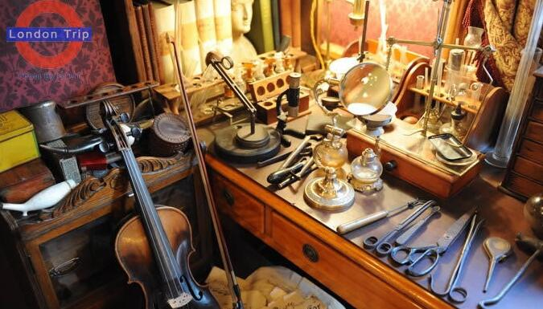
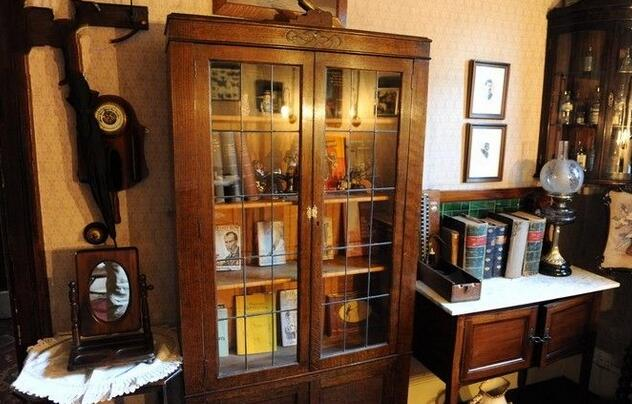
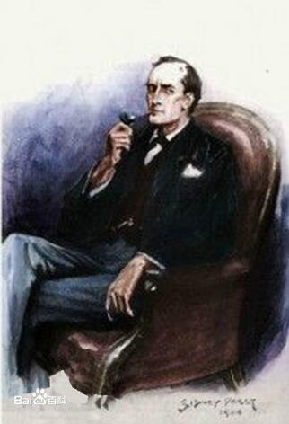

|  |
一层最重要的一层，是福尔摩斯和华生医生合用的书房，连着福尔摩斯的卧室。在那里，有身着维多利亚时代仆人服装的女工作人员非常热情地向来访者介绍情况并为来访者拍照。你可以坐在圆茶几（茶几上放着一把福尔摩斯经常用于破案的大放大镜）旁有一张大安乐椅里，手握福尔摩斯的大烟斗，头戴猎鹿帽，让工作人员为你拍一张满意的照片。书房的一角，就是小说中让人难忘的福尔摩斯的“化学实验室”－其实就是一张书桌。 |
|  |
二层原来是华生医生的卧室，和三楼一起，全都陈列着一些小说中的著名人物的蜡像。这些蜡像造型和真人一样大小，形象逼真，猛一看有时会以为是活人。 |
|  |
关于福尔摩斯夏洛克·福尔摩斯（Sherlock Holmes，又译作歇洛克·福尔摩斯），是一个虚构的侦探人物，是由19世纪末的英国侦探小说家阿瑟·柯南·道尔所塑造的一个才华横溢的侦探形象。福尔摩斯自己称自己是一名“咨询侦探”，也就是说当其他私人或官方侦探遇到困难时常常向他求救。大部分故事都集中讲述一些比较困难、需要福尔摩斯出门调查的案子。福尔摩斯善于通过观察与演绎法来解决问题。柯南·道尔是从自己见习于爱丁堡皇家医院时一名善于观察的老师的身上获得灵感，创造了福尔摩斯这一人物的。 |